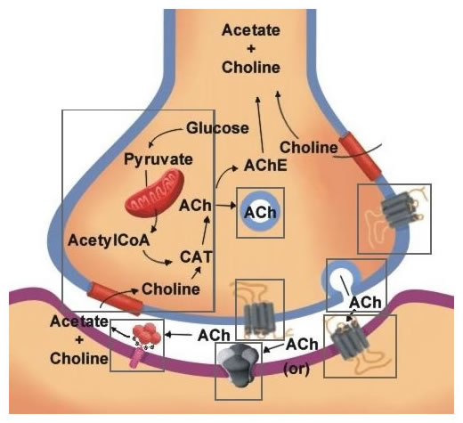
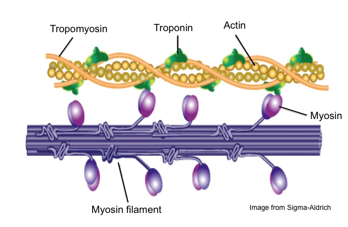
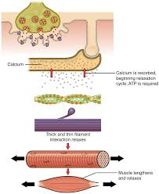

Muscle Function: Step-by-Step
Follow the sequence of events that lead to skeletal muscle contraction and relaxation.
-

Neural Signal Arrives
An action potential travels down a motor neuron to the neuromuscular junction (NMJ).
-

ACh Release & Binding
Acetylcholine (ACh) is released into the synaptic cleft and binds to receptors on the muscle fiber's sarcolemma.
-

Calcium Ion Release
The resulting muscle action potential travels down T-tubules, triggering Ca²⁺ release from the sarcoplasmic reticulum (SR).
-

Cross-Bridge Cycling
Ca²⁺ binds to troponin, exposing actin binding sites. Myosin heads bind, perform the power stroke (pulling actin), detach (using ATP), and re-cock, shortening the sarcomere.
-

Relaxation
Nerve signal stops, ACh is removed, Ca²⁺ is pumped back into the SR, tropomyosin blocks binding sites, and the muscle relaxes.